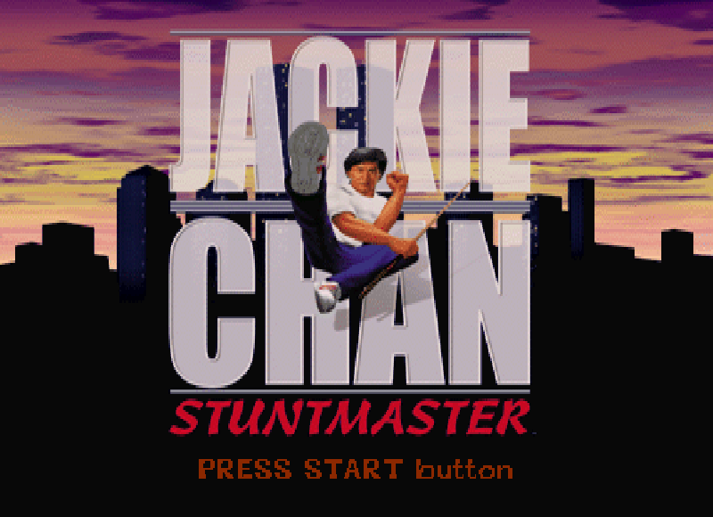
Jackie Chan Stuntmaster
Jackie luta pelas ruas e telhados de Chinatown para resgatar seu avô. Beat 'em up 3D com as acrobacias, armas improvisadas e o humor característicos do astro — inclui os famosos outtakes do filme.
▶️ Jogar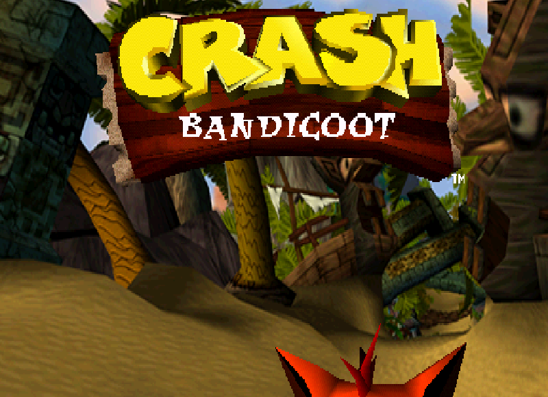
Crash Bandicoot
O clássico marsupial do PlayStation. Gire, pule e quebre caixas pelas ilhas Wumpa para resgatar Tawna e acabar com os planos do Dr. Neo Cortex e seus mutantes.
▶️ Jogar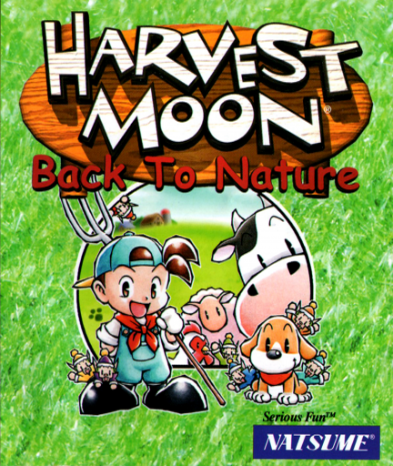
Harvest Moon: Back to Nature
Herde a fazenda do seu avô em Mineral Town e restaure-a em 3 anos. Plante, crie animais, pesque, faça amizades e case-se neste clássico da vida no campo.
▶️ Jogar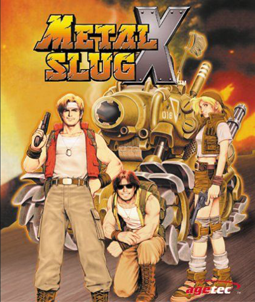
Metal Slug X
Versão turbinada de Metal Slug 2. Marco e Tarma enfrentam o exército do General Morden (e aliens) com tiros, granadas e os icônicos veículos Slug em pixel art impecável.
▶️ Jogar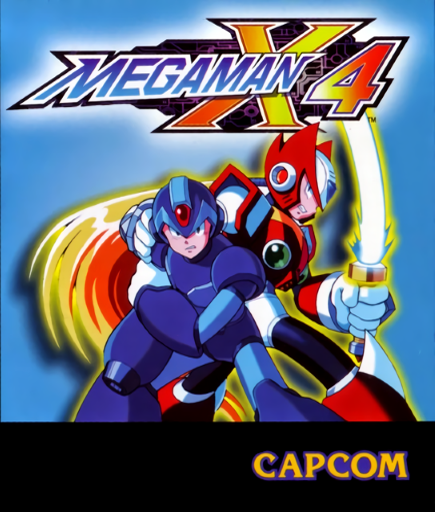
Mega Man X4
X ou Zero — pela primeira vez jogável do início ao fim com seu sabre. Mavericks, armaduras secretas e cutscenes em anime na guerra entre Hunters e Repliforce.
▶️ Jogar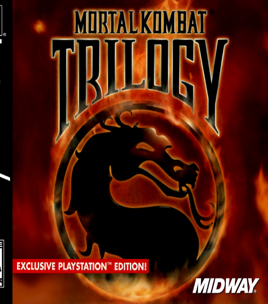
Mortal Kombat Trilogy
O compilado definitivo: todos os lutadores, cenários e Fatalities de MK1, MK2 e MK3/Ultimate num só disco — com trilha sonora direto do CD. Finish him!
▶️ Jogar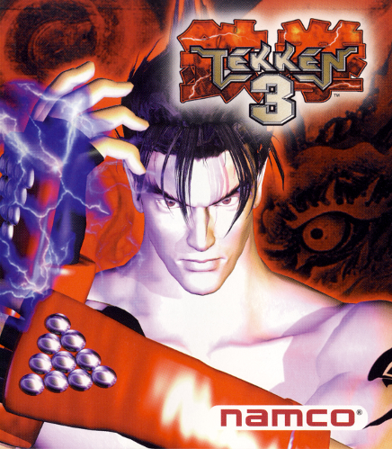
Tekken 3
O ápice da série no PlayStation. Jin Kazama entra no King of Iron Fist Tournament para vingar a mãe — com combos fluídos, side-step 3D e um dos melhores elencos dos jogos de luta.
▶️ Jogar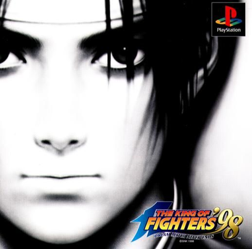
The King of Fighters '98
O "Dream Match" da SNK: 38 lutadores em batalhas 3x3, incluindo personagens de toda a saga Orochi. Considerado por muitos o melhor KOF de todos os tempos.
▶️ Jogar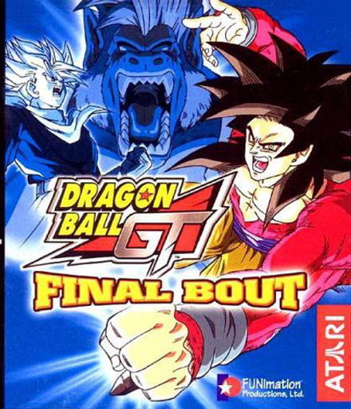
Dragon Ball GT: Final Bout
O primeiro Dragon Ball em 3D do PlayStation. Goku, Vegeta, Gohan e os guerreiros de GT em combates aéreos com kamehamehas, transformações Super Saiyajin e até SSJ4.
▶️ Jogar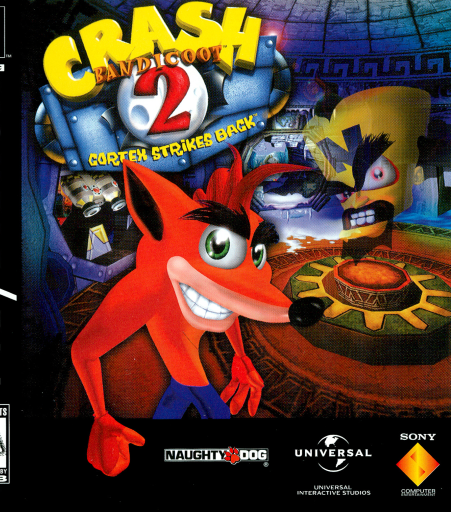
Crash Bandicoot 2: Cortex Strikes Back
Cortex diz querer salvar o mundo coletando cristais — mas será? Crash percorre as Warp Rooms com novos movimentos: deslizar, rastejar e o famoso body slam.
▶️ Jogar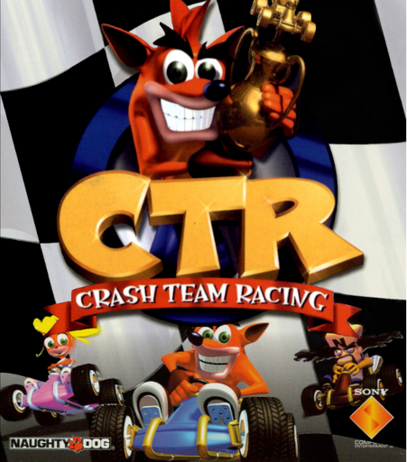
Crash Team Racing
O alien Nitros Oxide desafia a Terra para uma corrida pelo planeta. Crash, Coco, Cortex e cia. aceleram em 25 pistas com itens malucos, turbo acumulativo e modo aventura.
▶️ Jogar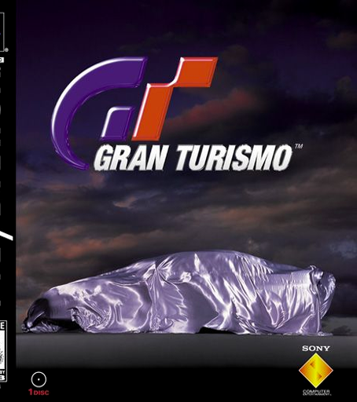
Gran Turismo
"The Real Driving Simulator" que definiu o gênero: mais de 140 carros reais, 11 pistas, tuning detalhado e o viciante modo Simulation com provas de habilitação.
▶️ Jogar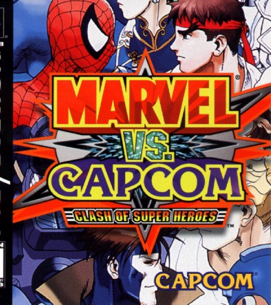
Marvel vs. Capcom: Clash of Super Heroes
Heróis da Marvel e da Capcom em duplas: Ryu, Chun-Li, Wolverine, Homem-Aranha e companhia em combates aéreos frenéticos com assists e hyper combos gigantes.
▶️ Jogar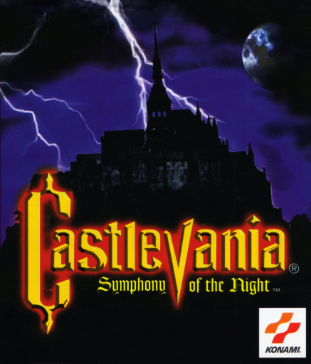
Castlevania: Symphony of the Night
Alucard desperta para explorar o castelo de Drácula. O jogo que batizou um gênero: exploração não-linear, RPG, segredos e o lendário castelo invertido.
▶️ Jogar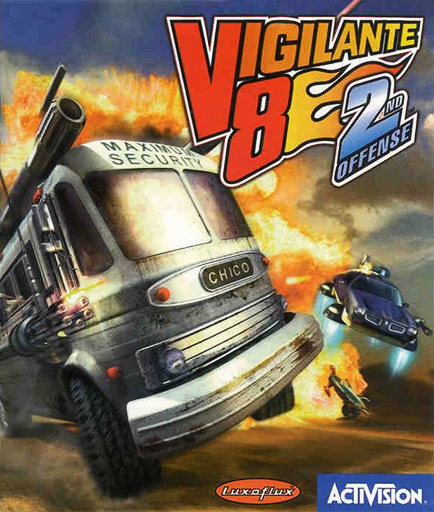
Vigilante 8: 2nd Offense
Muscle cars armados até os dentes nos anos 70 — agora com viagem no tempo. Arenas destrutivas, armas mirabolantes e um clima totalmente retro-futurista.
▶️ Jogar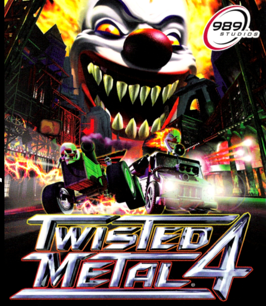
Twisted Metal 4
Sweet Tooth virou o chefe do torneio — e quem vencer escolhe um desejo. Caos veicular com arenas interativas, armas absurdas e uma trilha pesada de metal no CD.
▶️ Jogar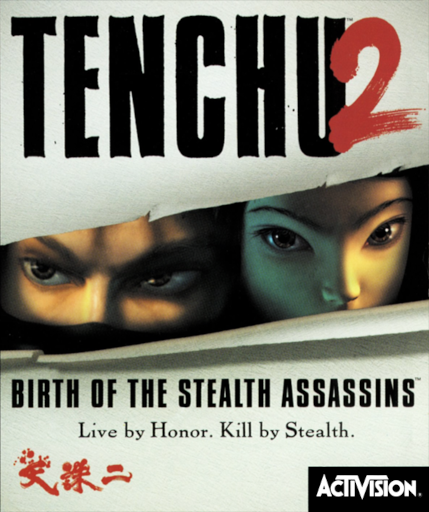
Tenchu 2: Birth of the Stealth Assassins
Prelúdio do clássico ninja: Rikimaru e Ayame em missões de infiltração no Japão feudal — ganchos, furtividade e kills silenciosos na sombra.
▶️ Jogar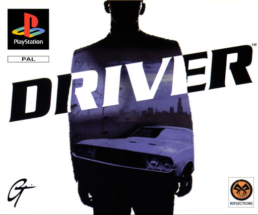
Driver
Tanner, policial infiltrado como motorista de fuga, percorre Miami, San Francisco, LA e Nova York em perseguições dignas de filme dos anos 70.
▶️ Jogar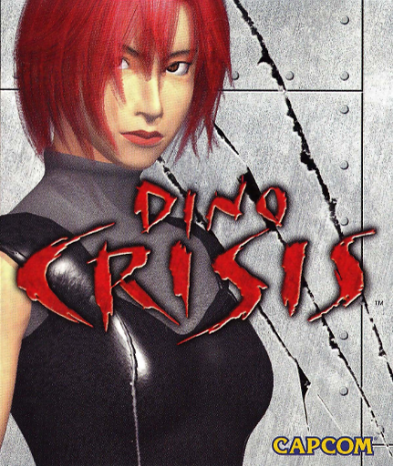
Dino Crisis
"Resident Evil com dinossauros": a agente Regina investiga uma ilha onde um experimento militar abriu uma fenda temporal — raptores inteligentes e um T-Rex incansável.
▶️ Jogar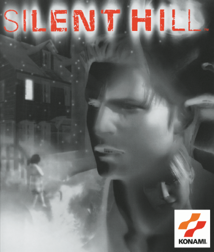
Silent Hill
Harry Mason procura a filha desaparecida numa cidade coberta de névoa e pesadelos. Terror psicológico, sirenes e o mundo sombrio alternado que virou lenda.
▶️ Jogar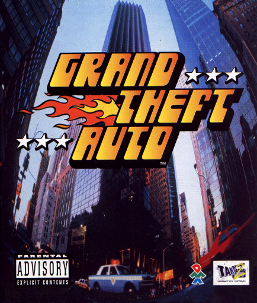
Grand Theft Auto
O original que começou tudo: visão aérea, três cidades (Liberty City, San Andreas e Vice City), missões para o crime organizado e liberdade total de causar caos.
▶️ Jogar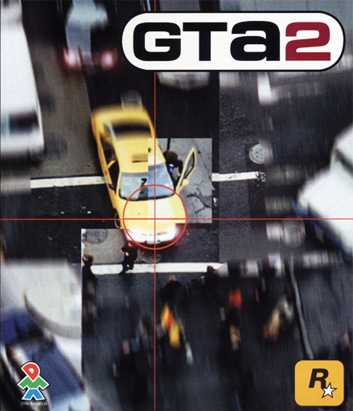
Grand Theft Auto 2
Anywhere City, um futuro próximo: sete gangues rivais, sistema de respeito e a mesma liberdade de visão aérea — agora com gráficos melhores e cidade mais viva.
▶️ Jogar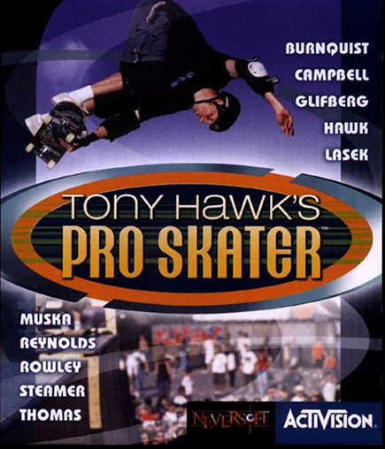
Tony Hawk's Pro Skater
O jogo que redefiniu o skate virtual: manobras, combos e a lendária trilha sonora punk/ska. 9 pistas, metas de pontuação e as fitas VHS secretas.
▶️ Jogar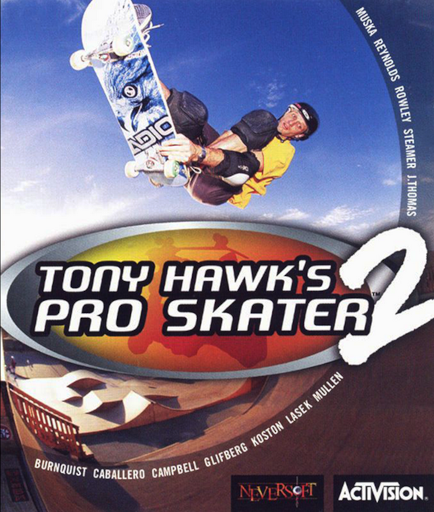
Tony Hawk's Pro Skater 2
A sequência que apresentou o manual — combos infinitos! Escola, Marselha, Hangar e o criador de pistas. Nota 10 absoluta do PlayStation.
▶️ Jogar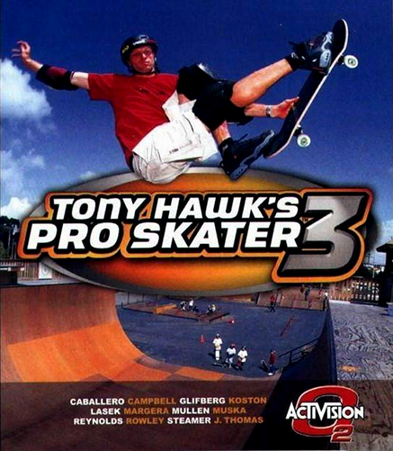
Tony Hawk's Pro Skater 3
O revert chegou para juntar vert e street num combo só. Foundry, Aeroporto, Los Angeles e o convidado secreto: Darth Maul de skate.
▶️ Jogar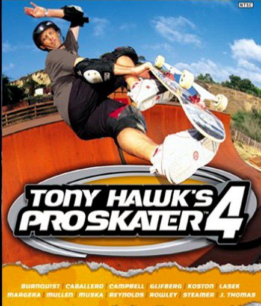
Tony Hawk's Pro Skater 4
O último da era clássica no PS1: mundo aberto por fase, spine transfer, skitching e o modo carreira com metas distribuídas pelos NPCs.
▶️ Jogar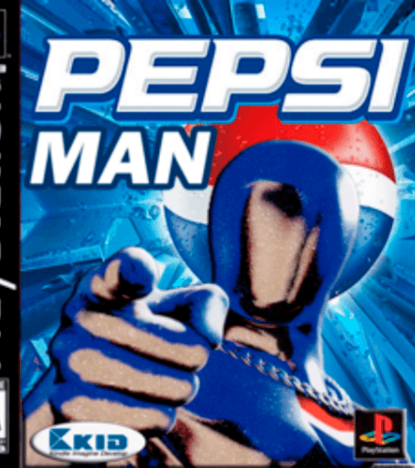
Pepsiman
O mascote japonês da Pepsi em fases de corrida desenfreada: desvie de caminhões, latas gigantes e obstáculos absurdos para matar a sede do povo. Bizarrice japonesa pura.
▶️ Jogar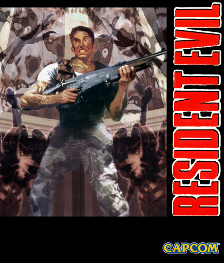
Resident Evil
O jogo que criou o survival horror. Chris ou Jill exploram a mansão Spencer infestada de zumbis, com munição escassa, puzzles e ângulos de câmera cinematográficos.
▶️ Jogar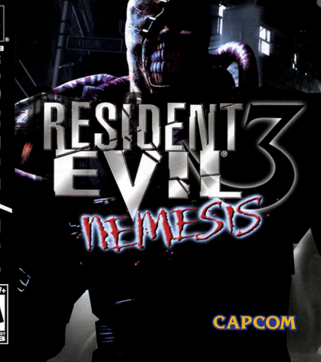
Resident Evil 3: Nemesis
Jill Valentine tenta fugir de Raccoon City durante o surto do T-vírus — enquanto o implacável Nemesis a caça pela cidade. STARS...!
▶️ Jogar
Resident Evil 2
Leon e Claire chegam separados a uma Raccoon City tomada por zumbis. Duas campanhas entrelaçadas, a delegacia icônica e o misterioso Mr. X no seu encalço.
▶️ Jogar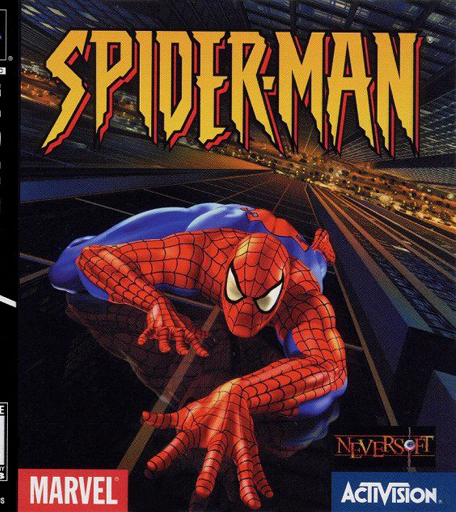
Spider-Man
Acusado de um crime que não cometeu, o Cabeça-de-Teia balança por Nova York enfrentando Venom, Octopus, Carnificina e outros vilões — com as piadas de sempre.
▶️ Jogar